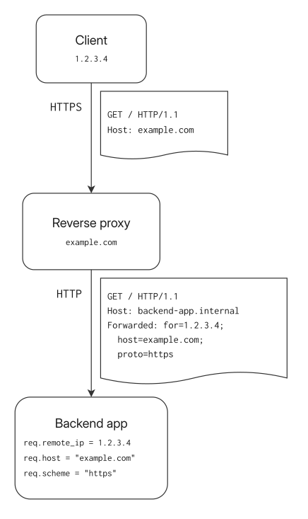
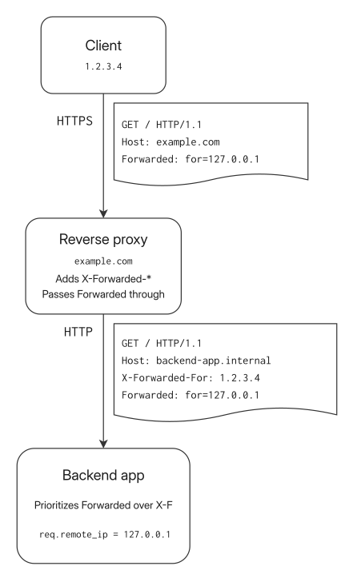

Forwarded Without Question: How Web Frameworks Overtrust the Forwarded Header
November 05, 2026 -Some web frameworks and servers, including Rails, Spring and Jetty, read values from the Forwarded request header in their default configuration. Most reverse proxies, CDNs and middleware servers do not touch the Forwarded header in requests. As a result, Forwarded headers set in untrusted requests will get passed on through proxies to the web applications, which may then consider the header trusted and use the values. This means that applications are often vulnerable to client IP and request host name spoofing via the Forwarded header.
My reports led to a Rails security fix (CVE-2026-126083) and changes to forwarded header handling in Spring and Reactor Netty.
To remove the spoofing vector, developers and administrators should make sure their proxies and applications agree on the headers that are trusted, and configure proxies to drop any untrusted proxy headers in requests.
Preface
At work, I was recently testing and deploying a new HTTPS reverse proxy service. I ran into some weirdness in how Envoy handles the X-Forwarded-For headers when it's configured not to trust the incoming values. I ended up configuring Envoy to just drop all incoming X-Forwarded-* and Forwarded headers, just to be safe.
But this got me thinking: would Envoy even do anything regarding the Forwarded header, if it's designed to mainly use the X-Forwarded-* family of headers? Are there web frameworks that would support both X-Forwarded-* and Forwarded and could this behaviour be abused?
Recap: the Forwarded header
The Forwarded header is specified in RFC 7239. It's meant to replace the non-standard, but very widely supported X-Forwarded-* (X-F from now on) headers. Basically it just combines the different X-F headers into one standardised header. Reverse proxies, CDNs and other middleware layers set request information (client IP address, original host name, request protocol) in these headers, where the backend web service can read them from.
There are four different fields that the RFC specifies and that have various levels of support in frameworks:
for=: the client IP address and the addresses of proxy servers on the way. ReplacesX-Forwarded-For.host=: the original host name. ReplacesX-Forwarded-Hostproto=: the original protocol or scheme, generally eitherhttpsorhttp. ReplacesX-Forwarded-Proto.by=: as specified in the RFC, "identifies the user-agent facing interface of the proxy". This is used a little inconsistently in web frameworks, but practically this is the IP address where the proxy received the request.
Here's an example diagram showing how the header is designed to be used. A client makes a request to example.com, where a proxy server receives the request, sets the appropriate Forwarded header values and passes the request to the backend application. The application then parses values from the Forwarded header.

The new header hasn't really been widely adopted yet. Only a few web frameworks seem to support it. This slow adoption is not at all surprising. Forwarded will need to be supported by both the web framework and the middleware servers for it to be usable. And as Forwarded has basically no real benefits over the X-F headers, there's just no real motivation to push Forwarded forward.
Proxy header risks
Risks with Forwarded and its X-F counterparts are well known. If a web app and the proxy servers in front of it are configured insecurely, an attacker may be able to spoof the client IP address, the request host name and the request protocol. This then often leads to real vulnerabilities when the spoofed values get used inside the web app. Typical examples include bypassing IP address restrictions or rate limits, and password reset email deception via host name overrides.
This diagram shows what spoofing could look like. The proxy only handles the X-F headers, but has no special handling for Forwarded. In that scenario, the backend app will receive both X-F and Forwarded headers with conflicting information. If the backend app prioritises Forwarded over X-F, spoofing is possible. For conciseness, only X-Forwarded-For and Forwarded: for are shown here, but the same problem applies to the host and proto fields, too. In the diagram, the backend app sets remote_ip to the spoofed value 127.0.0.1 from the Forwarded header, even though the proxy server reports the correct remote address 1.2.3.4 in X-Forwarded-For.

Because of the known spoofing risks, many web frameworks have a concept of "trusted proxies": they only read and parse the Forwarded or X-F headers when the request comes in from an IP address that's on a configured list of trusted proxy servers. This pattern protects against situations where requests can be sent to the backend app directly, bypassing the proxy. Without the trusted proxy check in place, those requests could just pass anything in the Forwarded header and spoof values in the request. Unfortunately, as I will later show, this system is not effective in the situation depicted above where the proxy itself passes sensitive headers through to the backend.
Web framework & server support
I was interested to know how Forwarded is supported in various web frameworks and servers in their default-ish configuration. Individual applications may of course have all kinds of different custom header parsing middleware, but the framework-level support reveals some patterns that may be more broadly applicable.
I read the framework docs and relevant source code, and built a local test app for the ones that seemed to have some support for Forwarded. The test apps are just echo servers that print the client IP address, hostname, and protocol values that are parsed by the frameworks. I can then make various requests to the apps and evaluate how they parse different header combinations.
I evaluated the frameworks configured with the minimum number of changes required to enable some kind of forwarded header support. Because of the known risks with X-F and Forwarded, especially if the apps are exposed directly to the Internet, many frameworks require enabling forwarded header or "trusted proxy" support explicitly. Developers are supposed to do that only if they know the app is really hosted behind a proxy server that sets these headers. I followed the framework documentation and made the minimal changes to enable header handling.
The list of frameworks checked here is somewhat arbitrary; basically I just checked frameworks I'm somewhat familiar with, and some widely used frameworks I know about. This list is by no means exhaustive. I investigated the latest versions of the frameworks at the time of testing (beginning of 2026). New versions have been released since, and some frameworks have issued patches to the vulnerable behaviour I found.
The table below shows my findings. The following sections go more into detail about some of the more interesting subjects.
| Framework | Forwarded support | X-Forwarded-* support | Prioritisation | Notes |
|---|---|---|---|---|
| Ruby on Rails 8.1.3 | for supported. | Yes | Forwarded: for prioritised over X-Forwarded-For | Behaviour changed in Rails 8.1. A security fix shipped in 8.1.4.1. |
| Jetty 12.1.7 | for, host, proto, by supported. | Yes | Forwarded prioritised over X-F | |
Spring Boot 4.0.5 + FRAMEWORK strategy | for, host, proto, by supported. | Yes | Forwarded prioritised over X-F (1, 2) | Spring Boot 4.2 defaults to parsing only X-Forwarded-* headers. |
Spring Boot 4.0.5 + Jetty 12.1.7 + NATIVE strategy | for, host, proto, by supported. | Yes | Forwarded prioritised over X-F | Header handling is done inside Jetty. Spring Boot 4.2 configures Jetty to parse only X-Forwarded-* headers by default. |
Spring Boot 4.0.5 + Reactor Netty 1.3.4 + NATIVE strategy | for, host, proto supported. | Yes | Forwarded prioritised over X-F headers. | Header handling is done inside Reactor Netty. Spring Boot 4.2 defaults to parsing only X-Forwarded-* headers. Without Boot, Reactor Netty 1.4 requires an explicit choice of header family. |
Spring Boot 4.0.5 + Tomcat 11.0.20 + NATIVE strategy | No | Yes | ||
| Symfony 8.0.8 | for, host, proto supported | Yes | Support for each header must be explicitly enabled. Conflicting information in incoming headers causes errors. | |
| Gorilla ProxyHeaders handler 1.5.2 | for and proto supported | Yes | X-Forwarded-For, X-Real-IP, Forwarded (source) | ProxyHeaders handler. For hostnames, only X-Forwarded-Host is supported |
| Gin 1.12.0 | No | Only X-Forwarded-For | ||
| ASP.NET Core 10 | No | Yes | ||
| Werkzeug 3.1.8 | No | Yes | ||
| Django 6.0.4 | No | Only X-Forwarded-Host, -Port, -Proto | ||
| Express 5.2.1 | No | Yes | X-Forwarded-For implementation in packages forwarded 0.2.0 and proxy-addr 2.0.7 |
X-Forwarded-* headers are widely supported across frameworks. Conversely, Forwarded support is more spotty. The frameworks that support it often don't have safe handling for a situation where both X-F and Forwarded are present in a request. This behaviour might lead to vulnerabilities.
Ruby on Rails
I happened to investigate this behaviour at an interesting time: the latest version of Rails at the time, 8.1, seemingly changed the Forwarded handling behaviour somewhat accidentally by changing how the "forwarded for" information is read.
The Rack libraries that Rails uses for HTTP request handling do read the Forwarded header, but before Rails 8.1, that information was not used anywhere. Since Rails 8.1, Rails uses Rack to determine the client IP in the RemoteIp middleware. Effectively, Forwarded: for is now supported.
If both Client-IP and X-Forwarded-For or Forwarded: for are specified in an incoming request, RemoteIp throws an IpSpoofAttackError. The point is to clearly detect and avoid situations where multiple headers are specified and a wrong IP could be accidentally chosen. Unfortunately, in Rails versions before 8.1.4.1, this check won't trigger if both X-Forwarded-For and Forwarded: for are specified, because the spoofing detection logic in those versions does not check all three headers.
The conflicting header check is actually a pretty good way to fingerprint Rails backends. If a web app returns a 500 error response when both Client-IP and Forwarded: for (or X-Forwarded-For) are included in the request, there's a good chance the backend is built on Rails.
Rails still does not really use host from the Forwarded header. So the impact of Forwarded getting passed to a Rails app is limited to source IP address spoofing.
After I reported this issue to the Rails project, they issued a fix where the spoofing check was expanded to cover all three headers (Client-IP, X-Forwarded-For, Forwarded). The fix was released in Rails 8.1.4.1. The vulnerability was assigned CVE-2026-126083.
Jetty
Jetty has supported RFC 7239 Forwarded for a long time, at least since 2016. Forwarded support has always been enabled by default, along with X-F, and the priority order between them got formalised in 2020. Forwarded is explicitly prioritised over X-F when both are present in an incoming request. This means that if proxy servers don't drop incoming Forwarded headers, the request IP address, host name and scheme can be spoofed.
Jetty servers vulnerable to this kind of spoofing are easy to look for: specifying an invalid port number in the host field will cause an error (for example, Forwarded: host=example.com:invalidport). Parsing the port number throws an exception and produces a 400 Bad Request response, and the response body often includes a stack trace or a Jetty-specific error message.
After I reported this issue to the Jetty project, they made some changes to make configuring the Forwarded handling behaviour easier, but did not change the default behaviour. That is somewhat fair, as the behaviour has been clearly documented, and the problem can be seen as a proxy configuration issue. However, as we'll see later, the defaults of most proxies really don't work well with the defaults of Jetty, and therefore the defaults still leave many servers open to spoofing.
If you are running Jetty servers, make sure to verify that your proxy only passes through the appropriate headers, and preferably also configure Jetty to accept only the headers your proxy actually handles.
Spring Boot & Reactor Netty
With these Java-based stacks, the Forwarded header handling behaviour depends on configuration and which application server is used. Spring Boot can leverage the server's implementation (the NATIVE option, the recommended default) or use Spring's headers support (server.forward-headers-strategy=FRAMEWORK).
The interesting ones here are Spring's Jetty support, Reactor Netty, and Spring Framework's own implementation: in Spring Boot versions before 4.2, all three accept both Forwarded and X-F headers by default when forwarded header handling is enabled. The three most important Forwarded fields (for, host and proto) are supported, and they are prioritised over the corresponding X-F headers. This means that if proxy servers don't drop incoming Forwarded headers, the request IP address, host name and scheme can be spoofed.
Tomcat does not display the same vulnerable behaviour. It only supports one header kind at a time, X-F by default (docs). In a typical setup, Tomcat applications would be configured to read only the headers set by the proxies in front of them.
The identification method I described for Jetty above works for Spring servers, too. Of course, many of them run Jetty behind the scenes, so that's natural, but Reactor Netty's and Spring's own header parsing also return 400 Bad Request for invalid port numbers, albeit without a stack trace. Other frameworks (see Symfony below) have this same behaviour, but the actual framework can often be deduced from the response contents.
After I reported this issue to the projects, Spring and Reactor Netty changed how the Forwarded header handling is configured in the frameworks (Spring 7.1, Spring Boot 4.2, Reactor Netty). Spring Boot 4.2 now defaults to parsing only X-Forwarded-* headers, protecting applications from this spoofing behaviour by default. Applications using Spring Framework 7.1 or Reactor Netty 1.4 directly, without Boot, must explicitly choose which header family to parse. Older release branches got the same new configuration capabilities, but as a non-breaking change, which means that users can choose to opt into selecting which headers to use. Documentation was also updated to try to make users aware of the potential security risks.
Symfony
Symfony is notable because it implements Forwarded support a bit more safely. First of all, Forwarded needs to be explicitly enabled in configuration for Symfony to read it. And if both X-F and Forwarded are enabled, but their values in an incoming request do not match, Symfony returns a 400 Bad Request response. This makes it impossible to spoof IP addresses in the typical situation where a reverse proxy sets X-Forwarded-For and lets Forwarded through unchanged.
If Forwarded support is enabled, it is still often possible to spoof the request host name though. This is because there's often no need for proxies to add X-Forwarded-Host to backend requests; they can just keep the original request hostname in the Host header. Client requests that specify Forwarded with only the host field set will not cause any conflicts: X-Forwarded-Host is not set at all in the backend request, and likewise the Forwarded header doesn't contain for or proto that could conflict with X-Forwarded-For or X-Forwarded-Proto. Symfony will then happily read the host name from the client-specified header.
The same detection trick I mentioned for the Java frameworks works on Symfony, too. Sending Forwarded: host=example.com:invalidport will make Symfony return a 400 Bad Request response immediately.
Reverse Proxies, CDNs, and Caches
Reverse proxies and other middleware services are the other layer that reads and sets Forwarded and X-F headers on the path to the upstream service. It is therefore important to investigate their behaviour, too.
I focused on reverse proxies, mainly because that's just what I'm more familiar with. I also did a lightweight documentation review of some CDNs and public cloud HTTPS load balancers to see how they handle the Forwarded header.
Reverse proxies
The overarching result is that Forwarded is almost entirely unsupported on proxy servers. As with the web frameworks, X-F headers are the universal way that proxies pass information about forwarded requests to the backend. Most proxies do not handle Forwarded specially, and instead pass it along just like any other header.
Like the web frameworks earlier, many reverse proxies are extremely configurable. I evaluated the proxies without plugins or other more complicated configurations. For some (like Envoy and Nginx), instead of just checking the "raw" server I opted to test with opinionated services, such as Kubernetes Ingress controllers, that configure these proxies in a suitable way.
Here's what the values in the table mean:
- handled: the proxy server overwrites the header before sending the request to the backend
- passed through: the proxy server does not have any handling for the header, and passes it through unaltered to the backend
| Proxy | Forwarded | X-Forwarded-For | X-Forwarded-Host |
|---|---|---|---|
| HAProxy 3.2.5 | Handled, when configured | Handled | Passed through |
| Envoy (Envoy Gateway 1.7.0) | Passed through | Handled | Passed through |
| Nginx (ingress-nginx 1.14.2) | Passed through | Handled | Handled |
| Traefik 3.6.7 | Passed through | Handled | Handled |
| Apache 2.4.65 | Passed through | Handled | Handled |
| Caddy 2.11.1 | Passed through | Handled | Handled |
| Kong (Kong Ingress Controller 3.5.4) | Passed through | Handled | Handled |
Of the proxies I tested, HAProxy is the only one that has some kind of support for Forwarded, but it still needs to be explicitly enabled. As far as I can tell, the others don't support it at all without extra plugins.
Cloud HTTPS Load Balancers
The same story continues with Cloud Load Balancers. I did not test them, so this analysis is based only on their documentation. AWS Application Load Balancer, Google Cloud Application Load Balancer, and Azure Application Gateway all use X-Forwarded-For for passing the client IP address. The docs don't mention Forwarded at all, so I would assume they pass Forwarded through.
AWS API Gateway is a surprising exception here. It actually transforms any X-F headers to Forwarded. This was the only cloud service I found that supports Forwarded in any capacity.
CDNs
No surprises here: Forwarded support is pretty much nowhere to be found. Naturally, CDNs might allow altering headers via custom rules, but the default configuration is what I'm interested in here.
I did not test the services; the information here is based purely on documentation.
- Cloudflare: Does not strip or handle
Forwardedheaders.Forwardedis included in the default cache key though, along withX-Fheaders. This prevents some web cache poisoning vulnerabilities (more about these below).
- Amazon CloudFront: Does not strip or handle
Forwardedheaders. Adds the client IP toX-Forwarded-Forand sends that to the backend. - Akamai: No mention of
Forwardedin docs. I assume it's just passed through as any other header.
Impact of trusting Forwarded
It looks like the situation is this: some of the most popular web frameworks trust and prioritise values from the Forwarded header, even though support for it in proxy servers is mostly nonexistent. It's therefore possible, and even common, to be able to spoof the client IP address (for=), request host name (host=) and protocol (proto=) in requests.
To test my hypothesis, I went through hundreds of bug bounty programs, making requests to in-scope servers with various Forwarded values. I focused on using the web framework detection techniques I mentioned earlier. During this research, I did not dive too deep into the programs, but instead focused on lightweight recon.
Based on the error responses and behaviour I saw, it's really common for servers to read and use values from the Forwarded header in the request. Fortunately, this alone is rarely a vulnerability. Usually, some other behaviour like cache poisoning or IP address based access control needs to be combined with the Forwarded header tricks to achieve some kind of security impact. I'll go through some of the possible attack vectors next.
Client IP address spoofing
This is one of the potential vulnerabilities that could be caused only by the server trusting Forwarded: for or similar headers. If the web application uses the client IP address in some business logic or access control system, being able to spoof the IP naturally allows doing all kinds of things. This includes:
- Bypassing IP address based access controls. For instance, an administration page on a website could check that the request comes in from the office network of the company, and deny requests otherwise.
- Bypassing IP address based rate limits
- Spoofing IP addresses in logs
While testing bug bounty program targets, I was able to find one vulnerability where my spoofed IP address was stored in an access log visible to administrators. The report ended up getting closed as a duplicate. These bugs may be rare to find in bug bounty programs because the problem is well known and often already fixed. Apps also rarely expose the client IP addresses, making spoofing difficult to observe. Still, this might be a useful thing to test with, especially when targeting a single bug bounty program instead of broad lightweight testing.
Hostname spoofing vulnerabilities
Web apps don't generally need to read the host name in the incoming request. One of the well-known situations where this is done is generating password reset links or other absolute URLs. If the host name can be spoofed, the web app could be tricked into generating password reset links with an attacker-controlled host name. If a user clicks this link in a password reset email they receive, the attacker will get the user's password reset token. The attacker can then proceed to reset the user's password and take over the account.
Web cache poisoning
Both Forwarded: host and Forwarded: proto can lead to web cache poisoning vulnerabilities in certain setups. Naturally, the web app must be behind a cache that stores some interesting responses and does not include the Forwarded header in the cache key. Cloudflare's default cache key does include Forwarded, and that directly prevents many cache poisoning exploits.
These cache poisoning vulnerabilities have a wide range of possible effects. One simple case is using Forwarded: host to override host names in absolute links. If the HTML with these links gets cached and served to users, they will get forwarded to attacker-controlled websites when clicking them. I found one of these cases in a bug bounty program, but unfortunately it was a duplicate.
Another common behaviour I found is sites responding with redirects when the Forwarded header includes proto=http. This happens when the web app or a proxy server on the way aims to force HTTPS connections by redirecting the user to the same page but using HTTPS. Often, the redirect targets are built with the host name read from Forwarded too, causing the redirect to target the attacker's website. This behaviour is not that useful by itself, but can be leveraged if the redirect gets cached. Then it could be possible, for instance, to poison the cache for a JavaScript file to redirect to an attacker-controlled domain which serves malicious JS, leading to XSS.
One fun special case is when the HTTP-to-HTTPS redirect does not change the host name, but still gets cached. This may lead to an infinite redirect loop, as the redirect target is always just the same URL. This is a denial-of-service situation, and those are unfortunately mostly out of scope in bug bounty programs. I did find at least a couple of these in the wild.
How to secure your apps
The short answer: just disable support for the Forwarded header in your web app. Proxy servers in front of your app most likely don't support the header anyway. Parsing and trusting incoming Forwarded headers is probably going to be just a vulnerability with no benefits.
The proper solution is, of course, to go through all the web apps and proxy servers in front of them, and verify that they all agree on the headers used. Currently, X-F headers are still the best option: they are most widely supported across proxies, web frameworks, CDNs, and other services. All the other headers, like Forwarded, X-Real-IP, etc. should then be disabled across the stack:
- Web apps should be configured not to read or trust headers that the proxies do not handle. I.e. if frontend proxies do not set or handle the
Forwardedheader, the backend web app should not read anything from it. - Proxies should be configured to drop or overwrite the various proxy headers in requests, so that clients can never supply them. I.e. if
X-Forwarded-*headers are used across the stack, the first reverse proxy should already drop incomingForwardedheaders in client requests.
Many frameworks allow configuring a list of allowed host names. That's an effective mitigation for host name spoofing attacks: even if a spoofed host name header got through, the app would reject the request if the name wasn't found in the list of allowed names. At least Symfony, ASP.NET and Django have these kinds of settings available.
Trusted proxy configs
It's worth mentioning that the various "trusted proxy" options that many web frameworks expose do not really guard against these problems. Many frameworks will only parse and trust incoming X-F and Forwarded headers if the request comes via a "trusted proxy". The idea of course is that those proxies will set the headers correctly and therefore they can be trusted.
The problem is that if a trusted proxy passes some request headers through unaltered, those headers will appear trusted in the backend. The proxy effectively acts as a kind of confused deputy in the situation. For a proxy to be truly trusted, it should actually remove or rewrite all possible headers that the "trusted proxy" setting controls in the backend. Express docs explain this well:
When setting to
true, it is important to ensure that the last reverse proxy trusted is removing/overwriting all of the following HTTP headers:X-Forwarded-For,X-Forwarded-Host, andX-Forwarded-Proto, otherwise it may be possible for the client to provide any value.
Unfortunately, as seen above, almost none of the commonly used proxy servers actually drop Forwarded by default. If the backend application or framework actually trusts Forwarded, the trusted proxy setting is pretty much meaningless as the proxy will happily forward spoofed headers to the backend.
Conclusion
It looks like Forwarded adoption is in a difficult state right now: the support for it in proxies is almost nonexistent, and that opens up spoofing vulnerabilities in web apps. At the same time, the web framework support is not too broad either, and therefore there's no notable interest to implement Forwarded in the proxies. X-Forwarded-* works just fine, so why bother?
I really don't know how widespread the issue is. Odds are that many servers are vulnerable in the wild, because the default configurations of many popular frameworks are susceptible to spoofing. Lightly scanning bug bounty programs does not give a good picture of this: I'm sure both X-F and Forwarded are very common things to test with when trying to find vulnerabilities, and most of the easy-to-find bugs have already been found.
Furthermore, it can be very difficult to even know if an app is vulnerable or not. For instance, spoofing the client IP address may work, but it could only be visible if the app has some kind of functionality that relies on the IP address. If there are no such features, the spoofing may still be visible in server access logs, for example, but an outside bug hunter has no visibility into that.
In my opinion, web frameworks and libraries should never enable support for many different proxy headers by default. Developers or admins should be forced to make the decision based on the actual proxy setup in front of the app. Many servers already require configuring the "trusted proxies" manually, so why not include the list of trusted headers in the configuration, too?
Updates:
- 2026-11-11: Added references to CVE-2026-126083 in the opening and the Rails sections. Reordered the opening sections for more clarity.